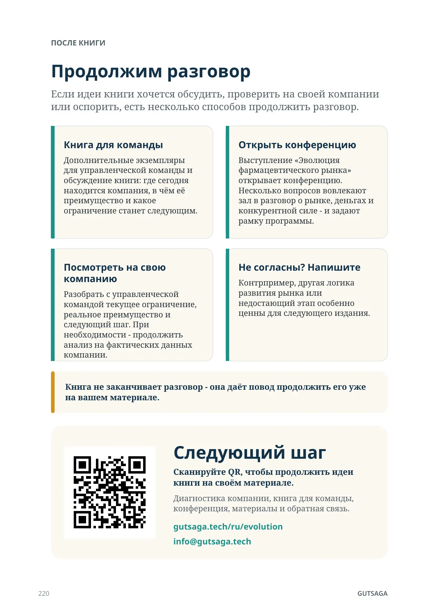
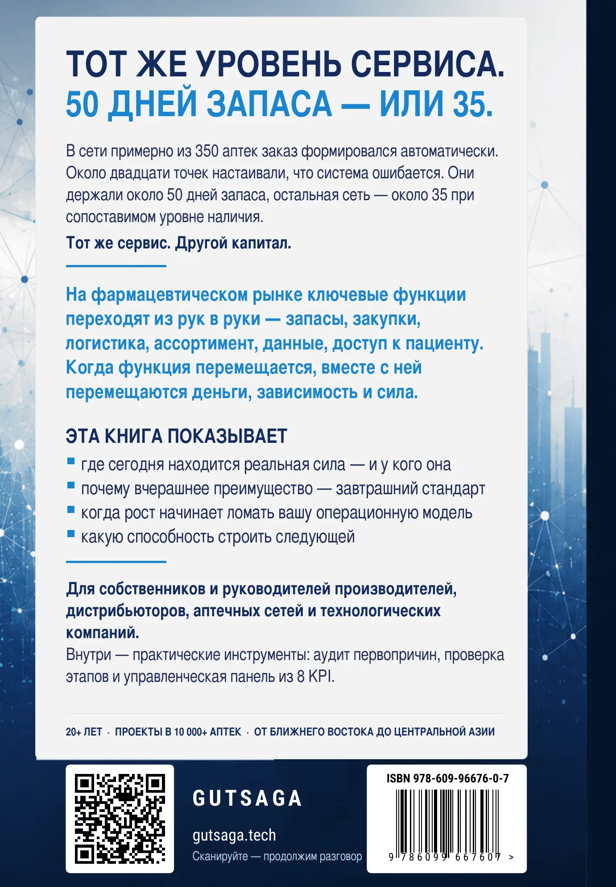

После книги
Продолжим разговор
Если идеи книги хочется обсудить, проверить на своей компании или оспорить, есть несколько способов продолжить разговор.
Книга для команды
Дополнительные экземпляры для управленческой команды и обсуждение книги: где сегодня находится компания, в чём её преимущество и какое ограничение станет следующим.
Открыть конференцию
Выступление «Эволюция фармацевтического рынка» открывает конференцию. Несколько вопросов вовлекают зал в разговор о рынке, деньгах и конкурентной силе - и задают рамку программы.
Посмотреть на свою компанию
Разобрать с управленческой командой текущее ограничение, реальное преимущество и следующий шаг. При необходимости - продолжить анализ на фактических данных компании.
Не согласны? Напишите
Контрпример, другая логика развития рынка или недостающий этап особенно ценны для следующего издания.
GUTSAGA